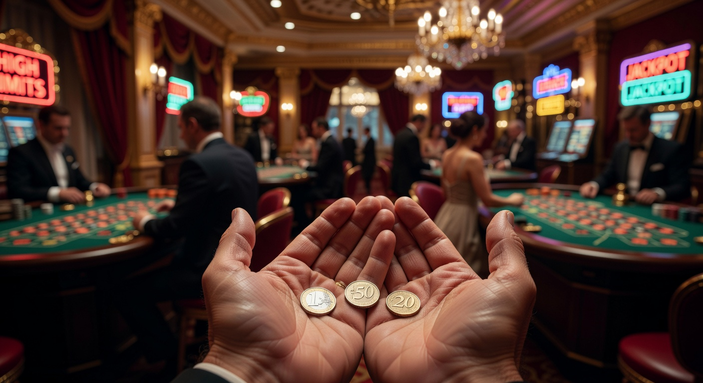
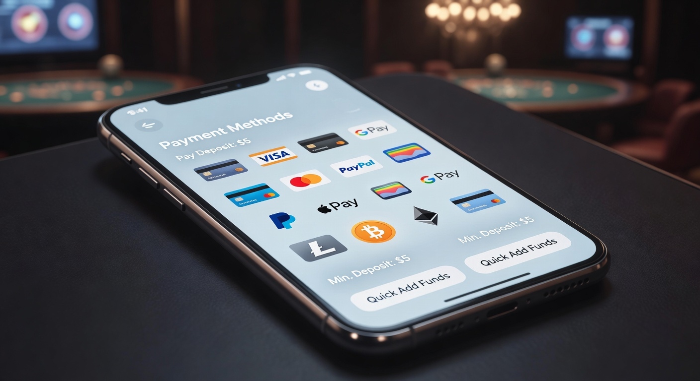
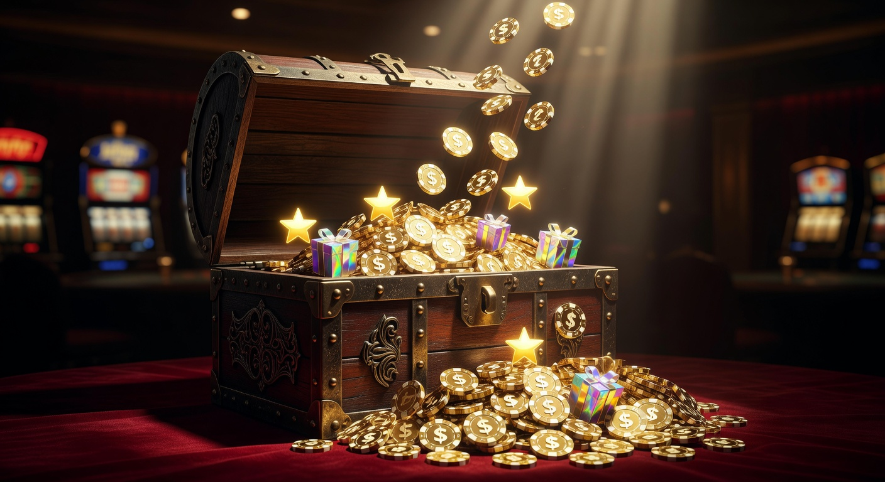
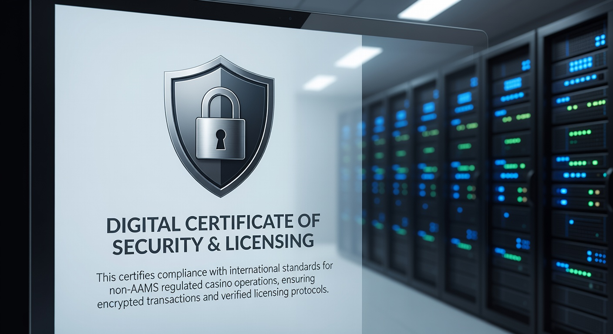
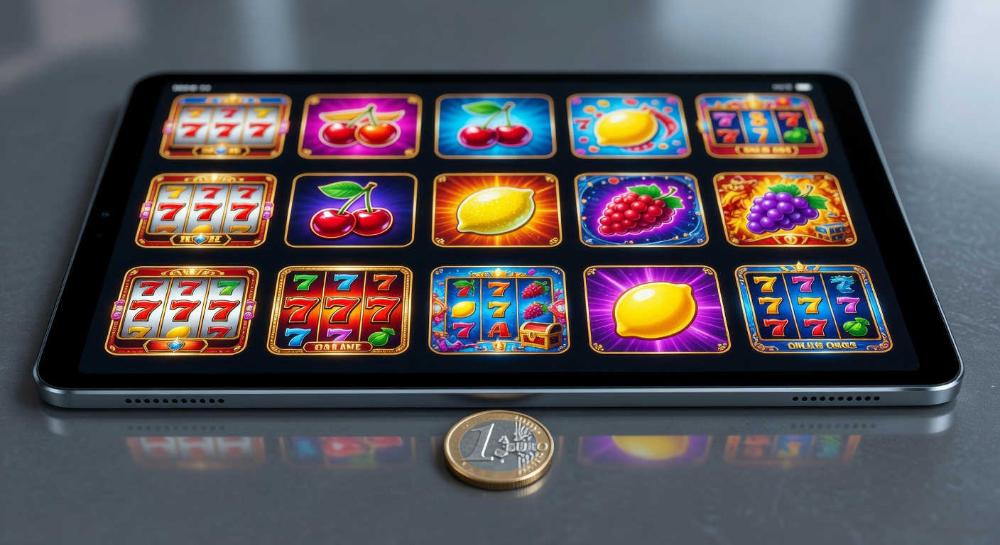

Casinò non AAMS deposito 3 euro: Guida ai migliori siti stranieri del 2026
Nel panorama del gioco online del 2026, la flessibilità è diventata il pilastro fondamentale per ogni appassionato. Molti giocatori italiani cercano oggi soluzioni che permettano di testare le piattaforme senza dover impegnare capitali ingenti. In questo contesto, il casinò non aams deposito 3 euro rappresenta la frontiera più accessibile, offrendo un punto d'ingresso estremamente basso per un'esperienza di intrattenimento di alto livello.
Le piattaforme internazionali hanno saputo intercettare questa esigenza meglio delle realtà locali. Mentre i siti con licenza nazionale spesso impongono limiti di versamento più elevati, un casinò straniero permette di esplorare cataloghi immensi con una spesa irrisoria. Questa guida esplorerà come navigare in questo settore in continua evoluzione, analizzando i vantaggi di puntare su siti sicuri, rapidi e tecnologicamente avanzati.
Giocare in un casinò non aams deposito 3 euro non significa rinunciare alla qualità. Nel 2026, grazie all'ottimizzazione dei costi di transazione e all'uso massiccio delle criptovalute, i piccoli depositi sono diventati economicamente sostenibili per gli operatori. Questo permette ai giocatori di attivare bonus, provare nuove slot e persino partecipare a tavoli live con un investimento minimo, mantenendo il pieno controllo del proprio budget di gioco.
Classifica dei migliori casinò online con ricarica minima 3 euro
Abbiamo analizzato decine di piattaforme per stilare una lista dei siti più performanti dell'anno. Ogni casinò non aams deposito 3 euro selezionato si distingue per affidabilità, varietà di giochi e rapidità nei pagamenti. Ecco i brand che dominano il mercato nel 2026:
| Brand | Bonus di Benvenuto | Punti di Forza | Link Ufficiale |
|---|---|---|---|
| Millioner | 100% fino a 1000€ + 150 giri gratis | Ampia selezione di crash games | Visita Millioner |
| Roulettino | Bonus cashback settimanale 15% | Specializzato in tavoli Live Evolution | Visita Roulettino |
| Wyns | Pacchetto fino 500 200 giri omaggio | Interfaccia mobile di ultima generazione | Visita Wyns |
| Kinbet | Bonus sport e casinò combinato | Supporto Bitcoin e pagamenti istantanei | Visita Kinbet |
| Dragonia | 500 200 giri su slot selezionate | Grafica immersiva e programma VIP | Visita Dragonia |
| Divaspin | Bonus ricarica weekend fino a 700€ | Tornei giornalieri con montepremi alti | Visita Divaspin |
Come selezioniamo le piattaforme più affidabili
La nostra analisi non si limita alla superficie. Per valutare un casinò non aams deposito 3 euro, testiamo personalmente ogni aspetto tecnico. Verifichiamo la presenza di protocolli SSL avanzati e ci assicuriamo che l'algoritmo RNG (Random Number Generator) sia certificato da enti indipendenti come eCOGRA o iTech Labs, garantendo che ogni esito sia puramente casuale.
Un altro fattore determinante è l'assistenza clienti. Nel 2026, ci aspettiamo che un portale di eccellenza offra supporto via chat live 24/7 in lingua italiana. La trasparenza dei termini e delle condizioni è altrettanto vitale: un buon sito deve indicare chiaramente i requisiti di scommessa prima ancora che l'utente effettui il versamento.
Perché scegliere un casinò non aams deposito 3 euro

Scegliere un casinò non aams deposito 3 euro nel 2026 è una mossa strategica per diverse tipologie di utenti. Per i neofiti, è il modo ideale per imparare le dinamiche delle scommesse senza rischi significativi. Per i veterani, queste piattaforme offrono l'opportunità di testare nuovi fornitori di software o strategie di gioco con un "costo di prova" praticamente nullo.
Inoltre, l'assenza delle restrizioni tipiche dell'ADM (ex AAMS) permette a questi operatori di offrire una libertà d'azione superiore. Ad esempio, è possibile trovare giochi non ancora disponibili sul mercato italiano o godere di limiti di puntata più elastici, il tutto partendo da una ricarica che equivale al costo di una colazione al bar.
Se cercate opzioni ancora più estreme per minimizzare il rischio, potreste essere interessati a consultare la nostra guida sul casinò non aams deposito 1 euro, dove la barriera d'ingresso è ridotta al minimo assoluto consentito dalla tecnologia attuale.
Vantaggi del gioco con budget ridotto
Il principale vantaggio di un casinò non aams deposito 3 euro è il controllo psicologico. Versare cifre contenute aiuta a mantenere un approccio ludico e responsabile. Nel 2026, la consapevolezza del gioco d'azzardo è cresciuta, e molti utenti preferiscono fare micro-depositi frequenti piuttosto che un unico grande versamento, distribuendo così il divertimento nel tempo.
Un altro beneficio è la possibilità di sbloccare piccoli bonus. Molte piattaforme, come Millioner o Dragonia, attivano promozioni speciali anche per chi deposita somme esigue, permettendo di giocare con un saldo effettivo superiore a quello versato inizialmente. Questo massimizza il valore di ogni singolo centesimo investito.
Svantaggi e limitazioni dei depositi minimi bassi
Nonostante l'attrattiva, un casinò non aams deposito 3 euro presenta alcune sfide. La limitazione più evidente riguarda i metodi di pagamento. Alcuni circuiti bancari tradizionali prevedono commissioni fisse che renderebbero un versamento da 3 euro anti-economico sia per l'utente che per il sito. Per questo motivo, la scelta è spesso ristretta a portafogli elettronici o asset digitali.
Inoltre, con un versamento così basso, potrebbe essere difficile raggiungere la soglia minima per alcuni bonus di benvenuto più corposi. Spesso, per ottenere un match bonus del 100% o 200 giri gratis, viene richiesto un minimo di 10 o 20 euro. Tuttavia, esistono eccezioni meritevoli che premiano la fedeltà a prescindere dall'entità del deposito.
Metodi di pagamento per versamenti da 3 euro

La rivoluzione dei pagamenti digitali nel 2026 ha reso possibile quello che anni fa era impensabile. Per ricaricare un casinò non aams deposito 3 euro, gli utenti possono oggi contare su un'infrastruttura tecnologica che riduce a zero i costi di transazione intermedi. Questo è fondamentale per far sì che i vostri 3 euro arrivino integralmente sul conto di gioco.
Le opzioni di deposito si sono diversificate enormemente. Oltre ai classici circuiti, vediamo l'ascesa di sistemi di pagamento istantanei legati all'Open Banking, che permettono trasferimenti immediati dal conto corrente senza le attese dei bonifici tradizionali. Questa rapidità è essenziale quando si desidera iniziare una sessione di gioco improvvisata.
Per chi preferisce soglie leggermente più alte ma comunque accessibili, è utile confrontare queste piattaforme con un casinò non aams deposito 5 euro, dove spesso la gamma di strumenti di pagamento supportati si amplia ulteriormente includendo più opzioni di credito tradizionali.
E-wallet e portafogli digitali
I portafogli elettronici sono i sovrani incontrastati del casinò non aams deposito 3 euro. Strumenti come Skrill e Neteller dominano la scena grazie alla loro capacità di elaborare micro-transazioni in tempo reale. Questi servizi fungono da cuscinetto tra la vostra banca e il sito di gambling, aggiungendo un ulteriore livello di privacy e sicurezza.
Anche se Paypal è più comune nei siti nazionali, molti operatori internazionali di alto profilo lo stanno integrando per attrarre il mercato europeo. L'uso di un e-wallet permette non solo ricariche veloci, ma anche prelievi molto più rapidi rispetto alle carte di credito, un dettaglio non trascurabile quando si vince una piccola somma partendo da un budget ridotto.
Criptovalute: la soluzione per micro-transazioni
Nel 2026, il Bitcoin e altre altcoin come Ethereum o Tether non sono più considerate asset esotici, ma strumenti quotidiani per gli scommettitori. Un casinò non aams deposito 3 euro che accetta cripto è spesso la scelta migliore perché le commissioni di rete (grazie a soluzioni come Lightning Network) sono quasi inesistenti.
Le criptovalute offrono un anonimato parziale e una velocità che nessun altro sistema può eguagliare. Piattaforme come Kinbet hanno costruito la loro intera reputazione sulla gestione fluida delle valute digitali, permettendo di convertire istantaneamente pochi euro in frazioni di token pronti per essere scommessi sulle slot più calde del momento.
Carte prepagate e voucher
Per chi non possiede un portafoglio digitale, i voucher prepagati rimangono un'ottima alternativa. Servizi come Paysafecard o Neosurf permettono di acquistare un codice fisico o digitale e caricarlo sul proprio casinò non aams deposito 3 euro preferito. È un metodo eccellente per chi vuole avere un limite fisico invalicabile alla propria spesa mensile.
L'unico limite di questi voucher è che raramente possono essere usati per il prelievo. In caso di vincita, dovrete fornire un metodo alternativo, come un IBAN o un indirizzo wallet, per riscuotere i fondi. Restano comunque tra i metodi di pagamento più sicuri in assoluto, poiché non richiedono la condivisione di dati sensibili online.
Bonus e promozioni disponibili con soli 3 euro

Contrariamente a quanto si possa pensare, depositare poco non esclude la possibilità di ricevere premi. Molti casinò non aams deposito 3 euro hanno creato offerte "micro" specifiche per questa fascia di utenza. Si tratta spesso di incentivi mirati a far scoprire le potenzialità del sito, agendo come un vero e proprio biglietto da visita digitale.
Per maggiori informazioni su come il mercato ha regolamentato queste dinamiche nel corso degli anni, potete approfondire la storia della regolamentazione del gioco in Italia su Wikipedia, per capire meglio la distinzione tra operatori certificati e piattaforme internazionali.
Giri gratis e pacchetti di benvenuto
Il premio più comune che troverete in un casinò non aams deposito 3 euro sono i free spin. Spesso, un operatore come Divaspin potrebbe offrire 20 o 50 giri omaggio su una slot specifica a fronte di un versamento minimo. Questa è un'occasione d'oro: con una spesa di 3 euro, potreste ritrovarvi a giocare decine di partite, aumentando esponenzialmente le probabilità di generare una vincita reale.
Alcuni siti propongono anche il cosiddetto bonus senza deposito come integrazione. Sebbene raro nel 2026 per i nuovi iscritti, viene spesso concesso ai giocatori che effettuano regolarmente piccoli versamenti, premiando la costanza piuttosto che l'entità della singola transazione. Un pacchetto tipico potrebbe includere un bonus di benvenuto proporzionale e una manciata di giocate gratuite.
Requisiti di scommessa (Wagering) da monitorare
Ogni volta che accettate un'offerta in un casinò non aams deposito 3 euro, dovete prestare attenzione al "wagering requirement". Questo numero indica quante volte il bonus deve essere giocato prima di diventare prelevabile. Nel 2026, uno standard onesto si aggira tra il 30x e il 45x.
Considerando che il deposito è basso, anche il volume di gioco richiesto sarà proporzionalmente contenuto. È fondamentale leggere i termini d'uso: alcuni giochi, come il blackjack o il baccarat, potrebbero contribuire solo in minima parte al soddisfacimento dei requisiti, mentre le slot machine solitamente contribuiscono al 100%.
Sicurezza e licenze nei siti non AAMS

La sicurezza è il tema cardine quando si parla di casinò non aams deposito 3 euro. Molti giocatori temono che "non AAMS" significhi illegale o pericoloso, ma nel 2026 la realtà è ben diversa. Questi siti operano sotto licenze internazionali rigorose che impongono standard di protezione dei dati e di equità del gioco molto elevati, paragonabili a quelli europei.
Per una panoramica completa sulle licenze più autorevoli a livello globale, potete consultare il sito ufficiale della Malta Gaming Authority, uno degli enti regolatori più rispettati nel settore del gambling online, che supervisiona molte delle piattaforme che operano legalmente al di fuori del circuito italiano.
Licenza Curaçao e-Gaming
La licenza di Curaçao è quella che troverete più frequentemente in un casinò non aams deposito 3 euro. È diventata estremamente popolare nel 2026 perché permette agli operatori di accettare criptovalute, cosa che altre giurisdizioni limitano ancora. Nonostante in passato avesse una reputazione altalenante, oggi Curaçao ha inasprito i controlli, richiedendo audit periodici sui sistemi informatici delle aziende licenziatarie.
Scegliere un sito con questa licenza garantisce che l'operatore disponga della liquidità necessaria per pagare le vincite e che utilizzi software originali di fornitori certificati. Brand come Wyns e Roulettino operano con questo tipo di autorizzazione, offrendo un ambiente protetto e professionale ai propri iscritti.
Malta Gaming Authority (MGA)
Se cercate il massimo della tutela in un casinò non aams deposito 3 euro, la licenza MGA è il gold standard. Malta applica regole rigidissime sulla protezione dei fondi dei giocatori, che devono essere tenuti in conti separati rispetto a quelli operativi della società. Questo assicura che, anche in caso di problemi finanziari dell'operatore, i soldi degli utenti siano sempre al sicuro.
I siti MGA offrono spesso strumenti di auto-esclusione avanzati e limiti di deposito impostabili direttamente dall'utente, promuovendo un approccio al gioco responsabile. Sebbene i depositi da 3 euro siano meno comuni su questi portali (che preferiscono soglie da 10€), alcuni operatori d'élite hanno introdotto eccezioni per attirare il mercato dei micro-giocatori nel 2026.
I giochi più adatti per un deposito da 3 euro

Una volta ricaricato il vostro casinò non aams deposito 3 euro, la domanda sorge spontanea: come investire al meglio questo piccolo budget? La scelta del gioco è cruciale per estendere il tempo di divertimento e avere una chance concreta di moltiplicare il capitale iniziale. Non tutti i titoli sono uguali, specialmente quando ogni centesimo conta.
In questo scenario, i provider di software giocano un ruolo fondamentale. Aziende come Evolution per il live gaming, o Netent e Playtech per le slot, hanno ottimizzato i loro prodotti per permettere puntate minime a partire da soli 0,01€ o 0,10€, rendendo accessibile l'intrattenimento premium anche a chi deposita cifre irrisorie.
Se vi accorgete che 3 euro sono troppo pochi per il vostro stile, potreste valutare il passaggio a un casinò non aams deposito 10 euro, dove la gestione del bankroll diventa meno stressante e permette di sedersi a tavoli live con limiti di puntata più confortevoli.
Slot machine con volatilità alta
Le slot machine sono il cuore pulsante di ogni casinò non aams deposito 3 euro. Per chi ha un budget ridotto, la strategia migliore è spesso cercare titoli ad alta volatilità. Questi giochi pagano meno frequentemente, ma quando lo fanno, i premi possono essere enormi rispetto alla puntata. Con un po' di fortuna, una singola rotazione da 0,20€ potrebbe trasformarsi in una vincita di centinaia di euro.
Provider come Pragmatic Play o Nolimit City sono famosi per queste meccaniche. Nel 2026, le slot includono anche funzioni di "acquisto bonus" proporzionate, anche se con 3 euro è difficile accedervi direttamente. Tuttavia, la ricerca dei simboli Scatter per attivare i giri gratuiti rimane l'obiettivo principale per chi vuole massimizzare il ritorno sull'investimento.
Crash games e mini-giochi
La vera novità del 2026 nel casinò non aams deposito 3 euro è l'esplosione dei crash games, come Aviator o JetX. Questi giochi sono perfetti per i micro-depositi perché permettono di incassare vincite rapide con moltiplicatori che crescono in tempo reale. Potete decidere di uscire dal gioco in qualsiasi momento, assicurandovi un profitto anche minimo.
Questi mini-giochi sono estremamente popolari su piattaforme come Millioner, poiché offrono un'interazione sociale (chat integrata) e una trasparenza totale grazie alla tecnologia "Provably Fair" basata su blockchain. È possibile giocare sessioni intere scommettendo solo pochi centesimi alla volta, rendendo i vostri 3 euro incredibilmente duraturi.
Opzioni di deposito: un'analisi dettagliata
Esaminando le opzioni di deposito disponibili, è chiaro che la tecnologia ha abbattuto i vecchi muri burocratici. Nel 2026, un casinò non aams deposito 3 euro di qualità offre una dashboard finanziaria intuitiva. Oltre ai sistemi già menzionati, stanno prendendo piede le soluzioni "Pay by Phone", che permettono di addebitare il versamento direttamente sul credito telefonico o sulla bolletta mensile.
Questa varietà garantisce che ogni utente possa trovare il metodo più comodo. È importante però verificare se il metodo scelto sia valido anche per il prelievo. La conformità alle normative anti-riciclaggio (KYC - Know Your Customer) richiede che, per la prima riscossione, l'utente verifichi la propria identità inviando un documento, un processo che nel 2026 è diventato istantaneo grazie all'intelligenza artificiale.
Bingo non AAMS: divertimento a basso costo
Un settore spesso sottovalutato è quello del Bingo non AAMS. Molti scommettitori non sanno che i siti internazionali offrono sale bingo con cartelle che costano pochissimi centesimi. In un casinò non aams deposito 3 euro, potreste acquistare decine di cartelle e partecipare a estrazioni con jackpot progressivi molto invitanti.
Il bingo straniero offre varianti diverse rispetto a quello tradizionale italiano, come il bingo a 75 o 80 palline, con ritmi di gioco serrati e grafiche accattivanti. Piattaforme come Kinbet integrano spesso queste sezioni, permettendo di alternare le slot a una partita a bingo, il tutto gestito dallo stesso portafoglio da 3 euro.
Confronto tra operatori: quale scegliere nel 2026?
La scelta finale del casinò non aams deposito 3 euro dipende dalle vostre preferenze personali. Se amate l'adrenalina del live, Roulettino è imbattibile. Se cercate un'esperienza visiva futuristica, Dragonia saprà stupirvi. È sempre consigliabile leggere le recensioni aggiornate e verificare le ultime promozioni, poiché nel dinamico mercato del 2026 le offerte cambiano settimanalmente.
Per approfondire le tendenze tecnologiche che guidano queste scelte, potete leggere articoli su Forbes relativi all'evoluzione del fintech, che spiegano come la digitalizzazione dei pagamenti stia rendendo sempre più semplici le transazioni nel mondo dell'iGaming.
Conclusioni sulla scelta dei siti con deposito minimo
In conclusione, il casinò non aams deposito 3 euro rappresenta una delle opzioni più intelligenti per approcciarsi al gioco d'azzardo online nel 2026. Offre un equilibrio perfetto tra accessibilità, divertimento e sicurezza. Grazie alla maturità del mercato internazionale, i giocatori italiani possono oggi godere di piattaforme eccellenti con investimenti minimi, senza rinunciare ai grandi sogni di vincita.
Ricordate sempre che il gioco deve rimanere una forma di intrattenimento. Anche se la cifra di 3 euro può sembrare piccola, la responsabilità è la chiave per un'esperienza positiva. Scegliete sempre siti licenziati (anche se stranieri), utilizzate metodi di pagamento sicuri e approfittate dei bonus con saggezza. Il futuro del gambling è a portata di clic, e non è mai stato così conveniente.
Domande Frequenti (FAQ)
È sicuro giocare in un casinò non aams deposito 3 euro?
Sì, a patto di scegliere piattaforme che possiedano licenze internazionali riconosciute come Curaçao o MGA. Questi siti utilizzano tecnologie di crittografia avanzate per proteggere i dati e garantiscono l'equità dei giochi tramite certificazioni RNG.
Posso vincere soldi veri con un deposito di soli 3 euro?
Assolutamente sì. Ogni puntata effettuata con saldo reale può generare vincite reali. Molti giocatori sono riusciti a incrementare il proprio bankroll partendo da piccole somme, specialmente utilizzando giri gratis o slot ad alta volatilità.
Quali sono i migliori metodi di pagamento per queste cifre?
I migliori sono gli e-wallet (Skrill, Neteller) e le criptovalute (Bitcoin, USDT), poiché offrono commissioni quasi nulle e tempi di elaborazione istantanei. Anche le carte prepagate sono un'ottima soluzione per chi cerca semplicità.
Posso ottenere un bonus di benvenuto con 3 euro?
Alcuni operatori offrono promozioni specifiche per micro-depositi, come giri gratis o piccoli bonus cashback. Tuttavia, i grandi bonus di benvenuto (es. 1000€) richiedono solitamente un versamento iniziale leggermente superiore, in genere dai 10€ in su.
Cosa significa "non AAMS" nel 2026?
Significa che l'operatore non possiede la licenza italiana rilasciata dall'ADM, ma opera legalmente sotto una giurisdizione straniera. Questo permette spesso di offrire termini più flessibili, pagamenti in cripto e un catalogo di giochi più vasto.

Content strategist e copywriter con esperienza decennale nel marketing digitale.